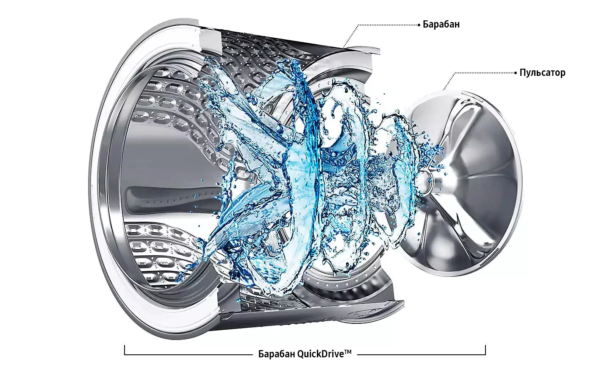
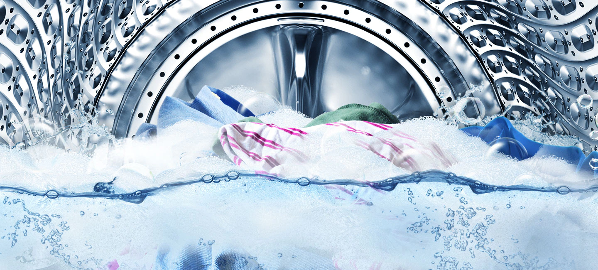
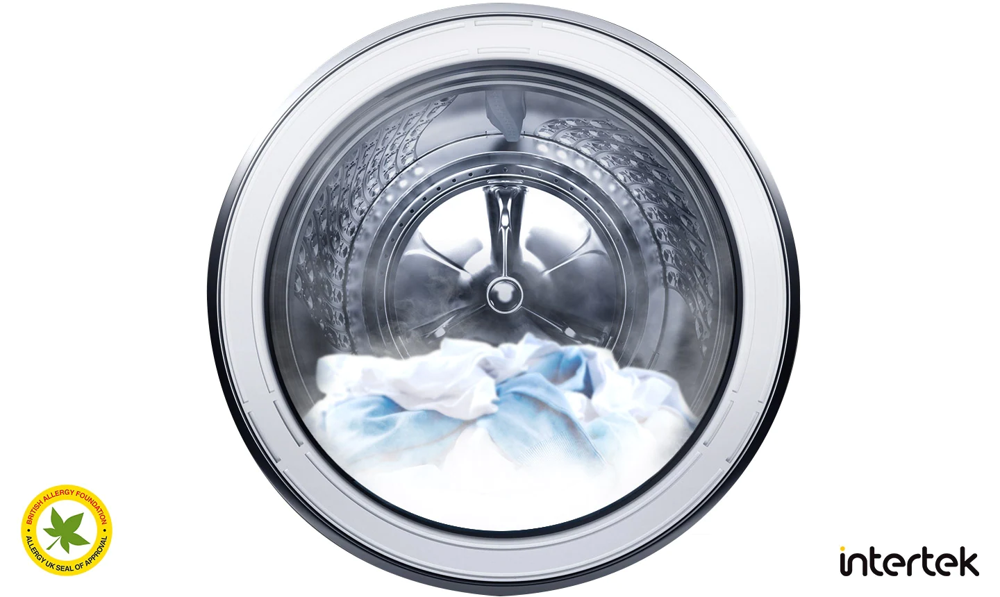

Timpul de spălare este redus la jumătate
Tehnologia QuickDrive ™ reduce timpul de spălare cu până la 50% și consumul de energie cu până la 20% fără a compromite performanțele de spălare. Folosind funcția „Q-Drum ™” cu un tambur principal rotativ independent și o placă din spate, veșmântul se mișcă dinamic cu o răzbunare. Acest lucru vă face spălarea mai rapidă, mai puternică și mai moale. *

Adăugați orice lucru în orice moment
Ați uitat să vă puneți cămașa? Ușa Add Wash ™ vă permite să adăugați rapid și ușor haine uitate * după ce ciclul de spălare a început deja **. De asemenea, puteți pune haine spălate manual în mașină pe care doriți doar să le clătiți sau să le uscați într-un uscător centrifugal.

Îngrijire inteligentă pentru spălare
Mod Laundry Planner
Q-rator * Sistemul inteligent de control îmbunătățește performanța QuickDrive ™ prin utilizarea experienței utilizatorului **. Rețeta de rufe recomandă cicluri optime de spălare ***, Planificatorul de rufe vă optimizează programul de spălare **** și Expertul HomeCare vă permite să depanați de la distanță.Îngrijire inteligentă pentru spălareFuncția de rețetă de spălătorieQ-rator * Sistemul inteligent de control îmbunătățește performanța QuickDrive ™ prin utilizarea experienței utilizatorului **. Rețeta de rufe recomandă cicluri optime de spălare ***, Planificatorul de rufe vă optimizează programul de spălare **** și Expertul HomeCare vă permite să depanați de la distanță.

* Necesită un cont de aplicație Samsung, disponibil pe dispozitivele Android și iOS. Conexiune Wi-Fi necesară. ** Stochează datele utilizatorului, setările și modelele de utilizare pentru a sugera opțiuni utile de lucru. Utilizatorul este singurul responsabil pentru eventualele consecințe ale funcționării mașinii, inclusiv dar fără a se limita la orice daune sau daune cauzate de furnizarea acestora de informații incorecte. **** Ciclul de spălare recomandat se bazează doar pe utilizarea unui anumit perioadă de timp pentru spălare și poate să nu fie adecvat pentru spălarea anumitor lucruri pe baza tipului de țesătură sau a metodei de vopsire a acestora.
Bule puternice
Tehnologia Eco Bubble ™ asigură o spălare temeinică, chiar și la temperaturi scăzute *. Detergentul pentru rufe formează bule, permițându-i să pătrundă rapid în țesături și să îndepărteze cu ușurință murdăria, protejând în același timp țesăturile și economisind energie. **

* Testat pe IEC 60456-2010 @ 4kg sarcină, Ultra Eco Cold (WF80FUNU4W) versus bumbac 40 ° C fără Eco Bubble (WF0702WKU). Rezultatele individuale pot varia. ** Pe baza unui raport de testare a performanței de laborator realizat de Springboard Engineering, care a investigat efectul soluției de detergent convenționale și a tehnologiei cu bule fără acțiune mecanică asupra benzilor EMPA.
Spălare în 39 de minute
Programul Super Speed vă permite să vă spălați rufele zilnice în doar 39 de minute. Tehnologia QuickDrive ™ scurtează timpul de spălare prin mutarea dinamică a articolelor de îmbrăcăminte, în timp ce Eco Bubble ™ oferă o curățare puternică. Timpii de clătire sunt, de asemenea, scurtați cu modelele Speed Spray și Swirl + Pattern * Drum, precum și viteza de clătire crescută.

* Testat pe † Swirl + Pattern † Mașină de spălat tambur în comparație cu Samsung Swirl Drum folosind date de testare interne
Păstrarea interiorului mașinii de spălat proaspete
Eco Drum Clean + vă permite să curățați interiorul mașinii dvs. de spălat, eliminând 99,9% din bacteriile care provoacă miros * fără a utiliza substanțe chimice dure. Această caracteristică vă anunță chiar automat să vă curățați aparatul **.

* Distruge 99,9% din bacterii din mașina de spălat. Bazat pe testarea ciclului Eco Drum Clean + al mașinii de spălat WW8800M ** de la Intertek. Oferă notificări utilizatorului la fiecare 40 de cicluri de spălare.
Îndepărtarea intensă a petelor
Tehnologia Bubble Soak elimină o varietate de pete încăpățânate la simpla atingere a unui buton. Hainele sunt bine îmbibate în bule active, astfel încât murdăria și petele sunt distruse și îndepărtate mult mai eficient *.

* Testat conform IEC 60456 ediția a 5-a cu o sarcină de 8 kg și folosind spălare Bubble Soak (WF80F5EU4) comparativ cu bumbacul 40/60 °, materialele sintetice 60 ° și denimul la 40 ° fără tehnologia Bubble Soak (WF0702WKU).
Curățare igienică
Oferiți o curățare cu adevărat profundă și igienică a hainelor cu abur. Aburul este emis din partea de jos a tamburului în timpul unui ciclu de abur puternic de igienă. Prin urmare, fiecare articol din tambur este complet saturat cu abur. Aceasta elimină murdăria încăpățânată și 99,9% din bacterii și inactivează alergenii.

* Pe baza raportului de testare de la Intertek cu încărcare de 3 kg și curățare cu abur igienic (WW10M864QOA).
Fiabilitate și performanță
Tehnologia Digital Inverter folosește magneți puternici în motor pentru a asigura o funcționare mai silențioasă și mai eficientă, în timp ce utilizează mai puțină energie decât motoarele universale. Eliminarea periilor în mișcare asigură o durabilitate excepțională * susținută de o garanție de 10 ani **.

* Produsul a primit certificarea Verband Deutscher Elektrotechniker (VDE) timp de 23 de ani.
Spălare liniștită
Tehnologia VRT Plus ™ reduce zgomotul și vibrațiile în timpul spălării *. Un senzor tridimensional de vibrații asigură echilibrarea tamburului în spațiu prin rotirea a 14 bile din oțel inoxidabil în direcția opusă mișcării masei de rufe. Chiar și atunci când tamburul se rotește încet, magneții puternici previn vibrații și zgomote subtile.

* Comparativ cu o mașină de spălat convențională Samsung fără VRT Plus.
Performanță de lungă durată
Ceramic Heater + are un nou tip de acoperire de eliberare, care reduce acumularea de scări comparativ cu încălzitoarele ceramice convenționale *. Designul său patentat ** reduce acumularea de scări pentru a preveni conducerea. Ca urmare, elementul de încălzire își păstrează eficiența pentru o perioadă mai lungă de timp și are o rezistență crescută.

* Testat cu Ceramic Heater + comparativ cu mașina de spălat convențională Samsung WF60F4E0N0W / ET. Rezultatele testelor se bazează pe verificarea independentă a schimbării greutății încălzitorului în apa dură. * Numărul cererii de brevet: 10-2012-0029920 în Coreea, China, Europa și Statele Unite.